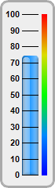
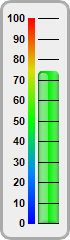
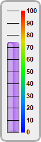
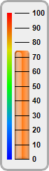

This example demonstration various orientations for vertical bar meters.
In a vertical bar meter, the scale labels can be positioned on the left or right side of the meter scale. This is controlled by the last argument to
LinearMeter.setMeter, which can be
Left or
Right. The color scale can also be position on the same or opposite side as the scale labels.
The following is the command line version of the code in "cppdemo/vbarmeterorientation". The MFC version of the code is in "mfcdemo/mfcdemo". The Qt Widgets version of the code is in "qtdemo/qtdemo". The QML/Qt Quick version of the code is in "qmldemo/qmldemo".
#include "chartdir.h"
void createChart(int chartIndex, const char *filename)
{
// The value to display on the meter
double value = 74.25;
// Bar colors of the meters
int barColor[] = {0x2299ff, 0x00ee00, 0xaa66ee, 0xff7711};
const int barColor_size = (int)(sizeof(barColor)/sizeof(*barColor));
// Create a LinearMeter object of size 70 x 240 pixels with very light grey (0xeeeeee)
// backgruond and a grey (0xaaaaaa) 3-pixel thick rounded frame
LinearMeter* m = new LinearMeter(70, 240, 0xeeeeee, 0xaaaaaa);
m->setRoundedFrame(Chart::Transparent);
m->setThickFrame(3);
// This example demonstrates putting the text labels at the left or right side of the meter
// scale, and putting the color scale on the same side as the labels or on opposite side.
int alignment[] = {Chart::Left, Chart::Left, Chart::Right, Chart::Right};
const int alignment_size = (int)(sizeof(alignment)/sizeof(*alignment));
int meterXPos[] = {28, 38, 12, 21};
const int meterXPos_size = (int)(sizeof(meterXPos)/sizeof(*meterXPos));
int labelGap[] = {2, 12, 10, 2};
const int labelGap_size = (int)(sizeof(labelGap)/sizeof(*labelGap));
int colorScalePos[] = {53, 28, 36, 10};
const int colorScalePos_size = (int)(sizeof(colorScalePos)/sizeof(*colorScalePos));
// Configure the position of the meter scale and which side to put the text labels
m->setMeter(meterXPos[chartIndex], 18, 20, 205, alignment[chartIndex]);
// Set meter scale from 0 - 100, with a tick every 10 units
m->setScale(0, 100, 10);
// To put the color scale on the same side as the text labels, we need to increase the gap
// between the labels and the meter scale to make room for the color scale
m->setLabelPos(false, labelGap[chartIndex]);
// Add a smooth color scale to the meter
double smoothColorScale[] = {0, 0x0000ff, 25, 0x0088ff, 50, 0x00ff00, 75, 0xdddd00, 100,
0xff0000};
const int smoothColorScale_size = (int)(sizeof(smoothColorScale)/sizeof(*smoothColorScale));
m->addColorScale(DoubleArray(smoothColorScale, smoothColorScale_size), colorScalePos[chartIndex
], 6);
// Add a bar from 0 to value with glass effect and 4 pixel rounded corners
m->addBar(0, value, barColor[chartIndex], Chart::glassEffect(Chart::NormalGlare, Chart::Left), 4
);
// Output the chart
m->makeChart(filename);
//free up resources
delete m;
}
int main(int argc, char *argv[])
{
createChart(0, "vbarmeterorientation0.png");
createChart(1, "vbarmeterorientation1.png");
createChart(2, "vbarmeterorientation2.png");
createChart(3, "vbarmeterorientation3.png");
return 0;
}
© 2023 Advanced Software Engineering Limited. All rights reserved.